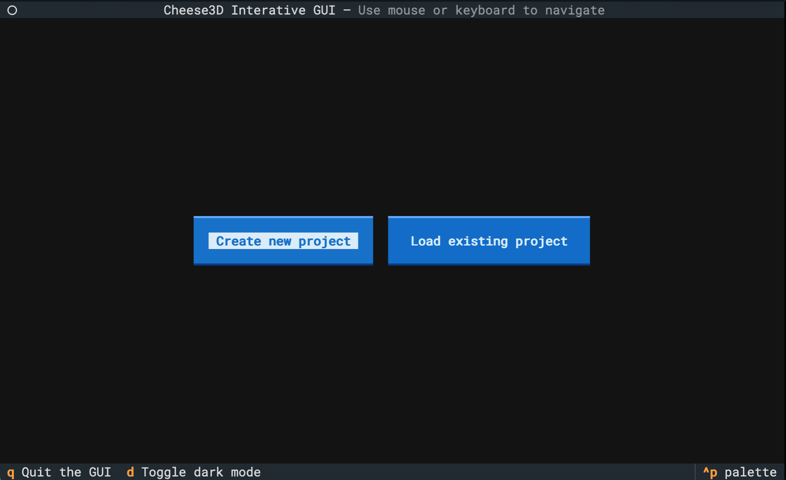
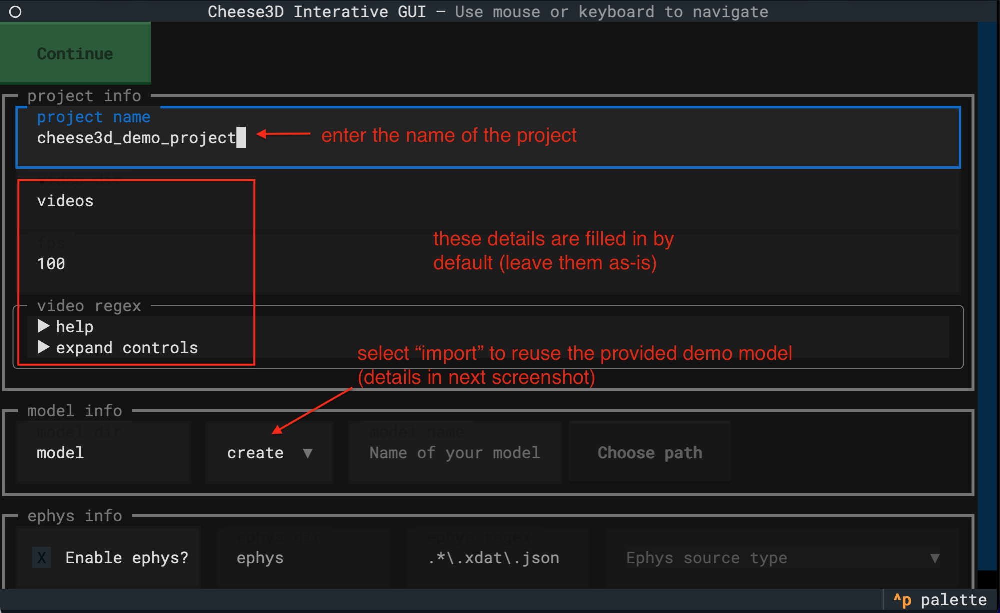
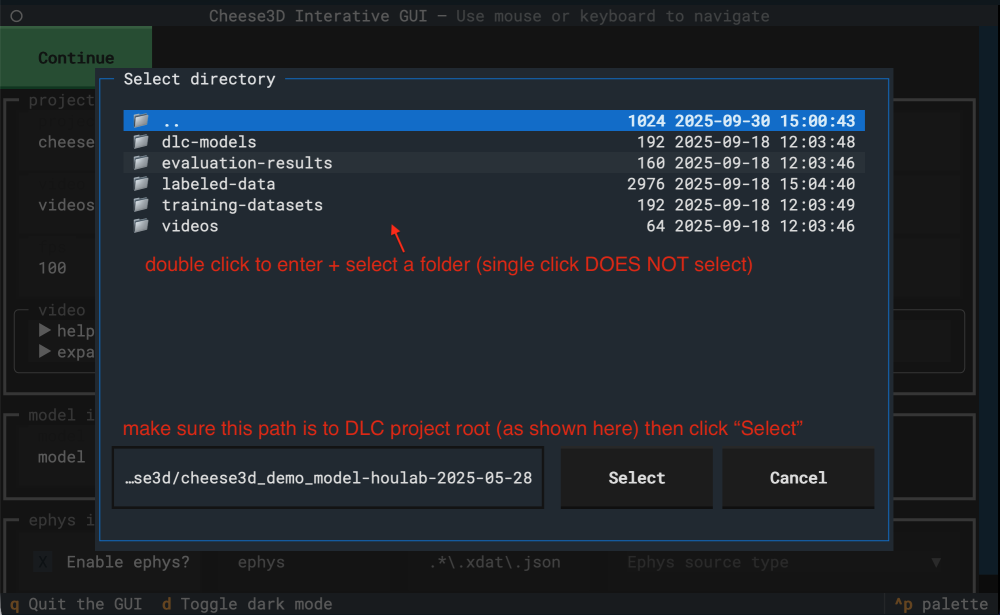
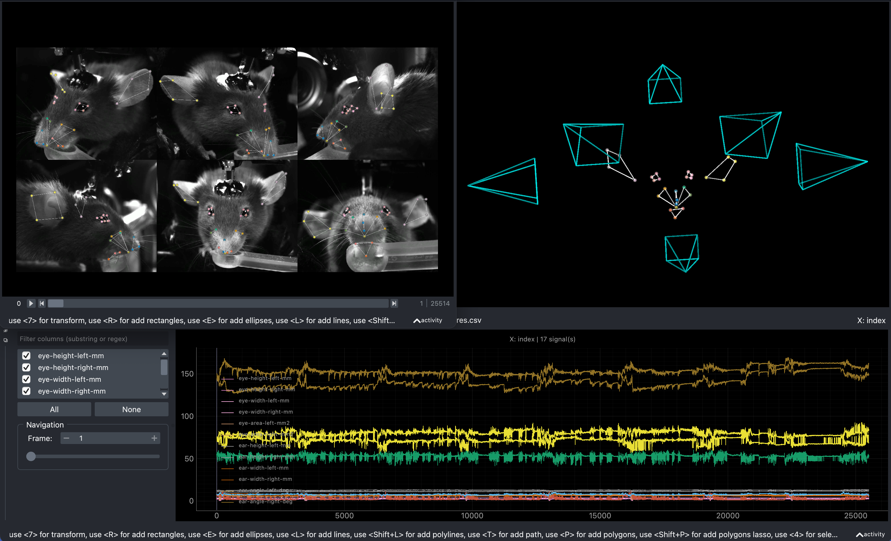

Quick-start guide#
The following guide will help you move from start to finish in Cheese3D using interactive mode. To follow along, you will need to download some demo data. After navigating to the cheese3d repo folder, download the demo data using:
curl https://labshare.cshl.edu/shares/houlab/www-data/cheese3d_paper_data/cheese3d_demo.tar.gz --output cheese3d_demo.tar.gz
Next, unpack the demo data:
tar -xvzf cheese3d_demo.tar.gz
You should notice the following new folders:
cheese3d_demo_datacontaining the source video data, organized by recording sessionscheese3d_demo_model-houlab-2025-05-28containing an pre-trained DLC model
Our goal is create and run a new Cheese3D project under cheese3d_demo_project. A visual overview of the process is shown below.
Organizing Cheese3D projects#
A Cheese3D project (by default) is self-contained in a folder with the same name as the project.
Creating a new project#
Start by launching the Cheese3D interactive UI:
cheese3d interactive
Tip
Use a large terminal window in interactive mode; it’s designed to be a full screen app!
Tip
Interactive mode can also be used as a web app by passing the --web flag when running the command above.
You should be greeted by a landing page:
Tip
You can toggle the UI between light/dark mode by pressing d.
Next, click the “Create new project” button, and you will see a form for setting up your project. Fill out the details (except the “model info” section), using the hints provided in each field to guide you. Below, we filled out the form with the values relevant to the demo project.
For the “model info” section, let’s select “import” instead of “create” for our model. This will open a file dialog to pick an existing DLC project. Navigate to the cheese3d_demo_model-houlab-2025-05-28 DLC project folder.
Now, we are ready to create our project! Click “Continue” at the top to move on. You should see a confirmation dialog.
 {kind=link}
{kind=link}
{kind=link}
Adding video data to the project#
After clicking “Done” in the dialog, you will be taken to the project interface. To start, you’ll be greated by a summary of your project. Here, we find information like the name of the project, the keypoints being tracked on the mouse face, and a list of videos. You should also find a new cheese3d_demo_project folder in your current working directory (where you launched the GUI).
Note
From now on, we will refer to files in the cheese3d_demo_project folder. This always corresponds to the folder you just created using the GUI.
Tip
Now that your project has been created, you can always return to this screen by running cheese3d interactive then selecting “Load existing project”. Go ahead, try it by pressing q to quit the app.
{kind=link}
{kind=link}
A keen-eyed user will notice that there are no videos added to the project!
Let’s fix that by copying the cheese3d_demo_data/20231031_chew folder into cheese3d_demo_project/videos (you need to create the videos sub-directory).
Note
Cheese3D is looking under cheese3d_demo_project/videos because that was the chosen “recording root” sub-directory when we created our project. You can always edit cheese3d_demo_project/config.yaml to adjust these settings in the future.
Next, go back to the GUI and click on the “select sessions” tab at the top menu. We see a list of sessions found in the cheese3d_demo_project/videos folder. Select the only available recording session by marking the checkbox.
Note
Every time you choose a new set of sessions, the project config.yaml file will be overwritten with the new selections automatically.
Returning to the project “summary” tab, we see that the project has been reloaded from disk automatically. And we have multiple sessions listed in the “Project sessions” section of the summary.
Extracting and labeling frames#
Now, we move onto the “model” tab at the top, where we can extract and label new frames from our video data.
Warning
Typically, we would extract new frames by click “Extract frames”. But since we imported a pre-trained DLC model, we can skip this step.
After extracting frames (again, skipped in the demo), we would label frames by selecting “Label frames”. Since our model is already trained, we will just view some existing labels. The labeling tool contains its own instructions to guide you through the labeling process. Click “Label frames” to launch to tool.
Note
Launching the labeling tool will open a Napari GUI window. The Cheese3D app will be locked out until you close this window. Note that the GUI requires a non-headless computer system (i.e., one with a monitor and desktop interface).
Training a new model#
Next, we would train a new DLC model by clicking “Train network” under the “model” tab.
Warning
Since we imported a pre-trained DLC model, we can skip this step.
Tip
Training with an existing model will train a new iteration of the model. This allows you to label or refine frames.
Tracking 3D keypoints#
Finally, we are on the last phase of the pipeline. Let’s start by clicking the “pose estimation” tab at the top.
We begin by calibrating the cameras in 3D. Click the “Calibrate” button.
Note
After clicking “Calibrate”, you will notice a cheese3d_demo_project/triangulation folder has been created. This is where the underlying Anipose project will reside. It will contain pose estimation results and output videos.
While the calibration step is running, you can view the output in the space below the buttons. The UI will be temporarily disabled until calibration is complete.
After calibration, we would click “Track” to track the keypoints in 2D using the DLC model, then click “Triangulate” to get the 3D keypoints. These work similar to calibration where you can view the progress in the space below.
Tip
After completing triangulation, you should notice a cheese3d_demo_project/triangulation/20231031_chew/cheese3d folder which contains the Cheese3D output features as a CSV file.
Visualizing the results#
Finally, to visualize the results, go to the “visualization” tab at the top. Clicking “Generate videos” will generate several videos with the 3D keypoints overlaid on the mouse face. You can view the resulting videos in cheese3d_demo_project/triangulation/<recording folder>/videos-compare.
Even better, you can use the data visualizer GUI by clicking “Visualize”. This will launch the GUI show below where you can advance through frames using the arrow keys while seeing the tracked mouse face in 3D as well as the Cheese3D features as traces.
🎉 Congratulations! You have succesfully analyzed mouse facial movement data with Cheese3D! 🎉